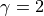
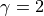

Median and Mean for Cauchy distribution¶
Figure 3.12.
The bottom panel shows a sample of N points drawn from a Cauchy distribution
with  and . The top panel shows the sample
median, sample mean, and two robust estimates of the location parameter
(see text) as a function of the sample size (only points to the left from
a given sample size are used). Note that the sample mean is not a good
estimator of the distribution’s location parameter. Though the mean appears
to converge as N increases, this is deceiving: because of the large tails
in the Cauchy distribution, there is always a high likelihood of a far-flung
point affecting the sample mean. This behavior is markedly different from a
Gaussian distribution where the probability of such “outliers” is much smaller.
and . The top panel shows the sample
median, sample mean, and two robust estimates of the location parameter
(see text) as a function of the sample size (only points to the left from
a given sample size are used). Note that the sample mean is not a good
estimator of the distribution’s location parameter. Though the mean appears
to converge as N increases, this is deceiving: because of the large tails
in the Cauchy distribution, there is always a high likelihood of a far-flung
point affecting the sample mean. This behavior is markedly different from a
Gaussian distribution where the probability of such “outliers” is much smaller.
{kind=link}
# Author: Jake VanderPlas
# License: BSD
# The figure produced by this code is published in the textbook
# "Statistics, Data Mining, and Machine Learning in Astronomy" (2013)
# For more information, see http://astroML.github.com
# To report a bug or issue, use the following forum:
# https://groups.google.com/forum/#!forum/astroml-general
import numpy as np
from matplotlib import pyplot as plt
from scipy import optimize
from scipy.stats import cauchy, norm
#----------------------------------------------------------------------
# This function adjusts matplotlib settings for a uniform feel in the textbook.
# Note that with usetex=True, fonts are rendered with LaTeX. This may
# result in an error if LaTeX is not installed on your system. In that case,
# you can set usetex to False.
if "setup_text_plots" not in globals():
from astroML.plotting import setup_text_plots
setup_text_plots(fontsize=8, usetex=True)
def robust_mean_mixture(x):
"""Compute the mean via a mixture of two Gaussians
One Gaussian accounts for outliers, and one Gaussian accounts for
the true distribution. This cannot be computed analytically, so
it uses scipy's function optimization
"""
if len(x) == 1:
return x
x = x.ravel()
mu_bg = np.mean(x)
sig_bg = 3 * np.std(x)
likelihood = lambda v: -np.sum(np.log(norm.pdf(x, v[0], v[1])
+ norm.pdf(x, mu_bg, sig_bg)))
v0 = np.array([0, 30])
v_best = optimize.fmin(likelihood, v0, disp=False)
return v_best[0]
def robust_mean_iterated(x, sigma_cut=3):
"""Compute the robust mean iteratively
After computing the mean, points further than 3 sigma from the mean
are removed and the result is repeated until convergence.
"""
flag = np.ones(x.shape, dtype=bool)
n_to_keep = x.size
while True:
xf = x[flag]
mu = xf.mean()
sig = xf.std()
if len(xf) == 1:
break
x_sig = abs((x - mu) / sig)
too_far = (x_sig > sigma_cut)
flag[too_far] = False
n_flag = flag.sum()
if n_flag == n_to_keep:
break
else:
n_to_keep = n_flag
return mu
#------------------------------------------------------------
# Create the distribution and compute means and medians
np.random.seed(6)
mu = 0
gamma = 2
xi = cauchy(mu, gamma).rvs(100)
Nrange = np.arange(1, len(xi) + 1)
mean = [np.mean(xi[:N]) for N in Nrange]
median = [np.median(xi[:N]) for N in Nrange]
mean_mixture = [robust_mean_mixture(xi[:N]) for N in Nrange]
mean_iter = [robust_mean_iterated(xi[:N]) for N in Nrange]
#------------------------------------------------------------
# Plot the results as a function of number of points
fig = plt.figure(figsize=(5, 3.75))
fig.subplots_adjust(hspace=0.05)
# first plot the mean
ax = fig.add_subplot(211)
ax.plot(Nrange, mean, '-.b', label='mean')
ax.plot(Nrange, median, '-k', label='median')
ax.plot(Nrange, mean_mixture, ':r', label='robust mean (mixture)')
ax.plot(Nrange, mean_iter, '--g', label='robust mean (sigma-clip)')
ax.plot(Nrange, 0 * Nrange, '-', c='gray', lw=0.5)
ax.set_xlim(0, 100)
ax.set_ylim(-7, 7)
ax.legend(loc=4, ncol=2, frameon=False)
ax.set_ylabel('Value')
ax.xaxis.set_major_formatter(plt.NullFormatter())
# now plot the median
ax = fig.add_subplot(212)
ax.scatter(Nrange, xi, lw=0, s=10, c='k')
ax.plot(Nrange, 0 * Nrange, '-', c='gray')
ax.set_xlim(0, 100)
ax.set_ylim(-75, 75)
ax.set_xlabel('Sample Size')
ax.set_ylabel('Value')
plt.show()